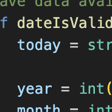

This was my first experience writing in Python. I coded this up as an easy way to track weather trends as thats something that interests me. Learning the Python syntax was a headache at first but once I got used to it I realised how powerful it can be. Since then I've used python for playing around with distributed systems and sockets.
I put this website together as a way to familiarize myself with HTML and CSS as I had never had any experience in either language prior. I wanted to challenge myself to not use any JS and rely solely on new skills to make everything work. It went through a couple iterations before I found a style I liked. In the future I plan on updating it radically with a few new ideas, but until then it's a good spot to put my resumé.